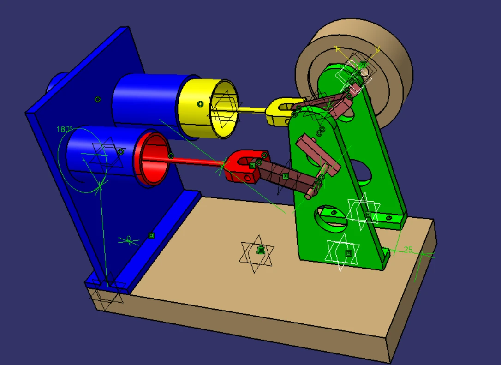
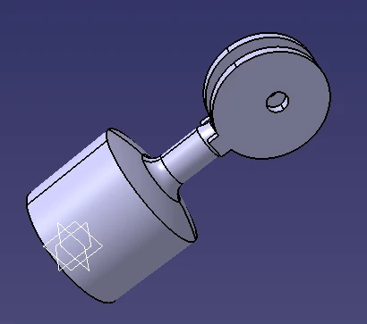

Academic · Thermodynamics
Gamma Stirling Engine Thermal Analysis
Academic project
Project overview
I modeled a Gamma Stirling engine and studied its theoretical thermal cycle.
The project connected the engine geometry with the pressure-volume cycle used to describe heat-to-work conversion.

My contribution
What I did
I developed a parametric CAD model of the engine. I carried out theoretical P–V-cycle calculations. I evaluated thermal-to-mechanical conversion through the cycle analysis.
A closer look
Inside the work

Result
The outcome
A Gamma Stirling CAD assembly and theoretical thermal-cycle study linking the mechanism to heat-to-work conversion.
Methods & tools
- Parametric CAD
- Theoretical P–V cycle
- Thermal calculations